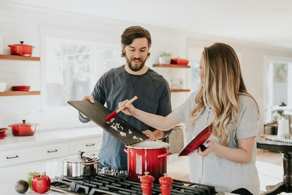

나무로 200미터를 지을 수 있을까. 국토교통부가 이 질문을 정식 연구 과제로 올렸다. '200m급 목구조 대공간 건축물 기술개발' 공고다. 연구 기간은 2026년 4월부터 2030년 12월까지 약 4년 9개월, 정부출연금은 200억 원 이내. 목조 건축이 저층 시범 사업의 상징적 언어를 넘어, 초고층·대공간의 구조 재료로 진지하게 검토되기 시작했다는 뜻이다.
시범에서 구조로
그동안 국내 목조 건축은 '가능성의 전시'에 가까웠다. 7층 목조, CLT 하이브리드 벽 같은 사례가 상징적 이정표 역할을 했지만, 대부분 저층·중층에 머물렀다. 이번 R&D의 목표는 결이 다르다. 정부가 내건 연구 목표는 '대경간 목구조 건축의 구조·재료·설계·시공·유지관리 전주기 기술 확보'다. 접합부 설계와 안정성 검증, 국산 재료 기반 구조재 개발, 대공간 적용 설계·시공 기법, 그리고 내구성·수명 관리·탄소저감 평가체계까지 — 실제로 크고 높은 목조 건물을 짓기 위한 공학적 뼈대 전체를 다룬다.

매스팀버가 자재 산업에 던지는 질문
핵심 재료는 매스팀버(Mass Timber) — CLT(직교집성판)와 글루램(집성재)이다. 이 재료들이 대형 구조에 들어가면, 자재 산업의 지형이 바뀐다. 첫째, 국산 구조재 개발이 명시적 연구 항목이라는 점이 중요하다. 수입 CLT에 의존해온 시장에 국산 공급망을 세우겠다는 신호다. 둘째, 접합부·방화·내구성 기술이 확보되면 목재는 '마감재'에서 '구조재'로 등급이 올라간다. 셋째, 탄소저감 평가체계는 목재의 최대 무기다. 콘크리트·철강이 배출하는 탄소를 나무가 저장하는 탄소로 대체하는 계산이 제도화되면, 매스팀버는 규제 대응 수단이 된다.
"목재가 마감을 넘어 구조가 되는 순간, 목조 건축은 취향의 문제에서 탄소의 문제로 넘어간다."
4년 뒤를 준비하는 법
이 R&D의 결실은 2030년 말에야 나온다. 그러나 산업의 준비는 지금부터다. 국산 구조용 목재의 품질 표준, 방화·내화 인증, 대형 접합 철물, 그리고 시공 인력 — 어느 하나도 하루아침에 갖춰지지 않는다. 해외에서는 이미 매스팀버 고층 건축이 상업적으로 자리 잡았고, 글로벌 IT 기업들이 목조 캠퍼스를 선택하고 있다. 한국이 이 R&D를 통해 따라잡으려면, 연구와 별개로 공급망·인증·시공 생태계가 함께 성장해야 한다. 200미터라는 숫자는 상징이지만, 그 상징을 현실로 만드는 것은 결국 자재와 시공의 축적이다.
편집장 코멘트
ARCHINODE는 이 흐름을 '자재의 등급 상승'으로 읽는다. 목재가 구조재의 지위를 얻으면, 목재 브랜드의 서사도 바뀐다. '따뜻한 마감'이 아니라 '검증된 구조 + 탄소 저장'이 핵심 메시지가 된다. 국산 CLT·글루램 제조사, 접합 철물 업체, 방화 도장·부재 기업에게 지금은 기술 실적과 인증을 쌓아둘 4년의 준비 기간이다. 규제가 목재를 부르기 전에, 목재가 규제에 답할 준비를 해두는 쪽이 다음 사이클의 주인공이 된다.